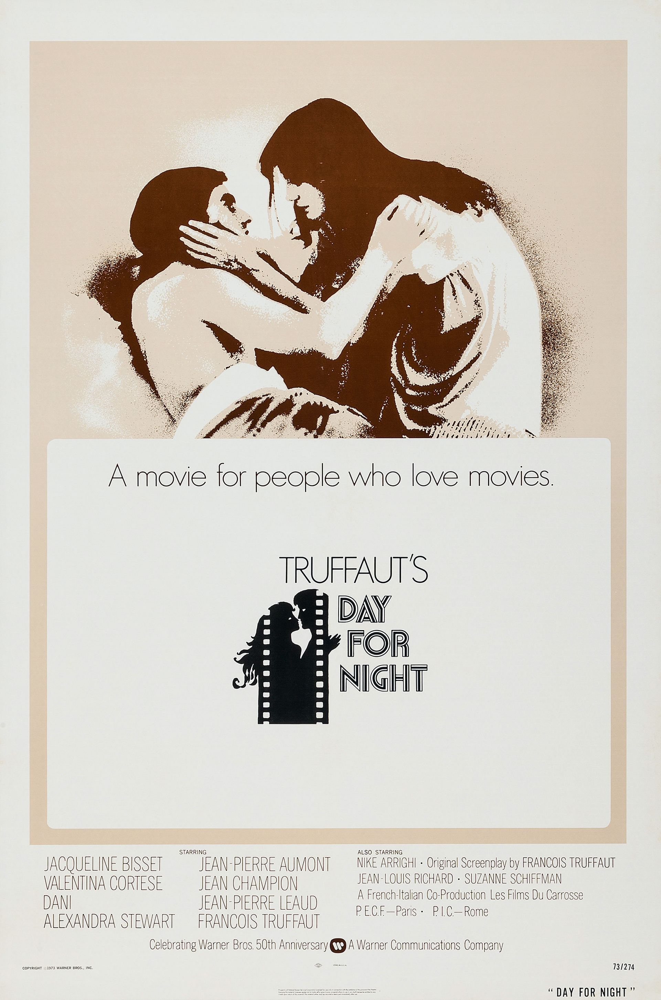

Day for Night
46th Academy Awards
(Oscars 1974)
47th Academy Awards
(Oscars 1975)
4 Nominations, 1 Award
| Nominations | ||
|---|---|---|
| Category | Nominees | Result |
| Actress in a Supporting Role | Valentina Cortese | Nominated (47th) |
| Directing | Francois Truffaut | Nominated (47th) |
| Writing (Original Screenplay) | Francois Truffaut, Jean-Louis Richard, and Suzanne Schiffman | Nominated (47th) |
| Foreign Language Film | France | Won (46th) |